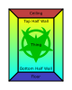
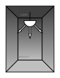
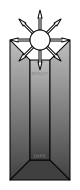
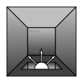
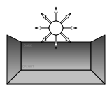
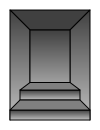
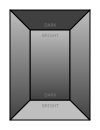

Sector Lighting
There is an unique look to Doom 64 that comes from its expanded lighting system called gradient colored lighting. Each sector has its own set of five colors defined. These five colors are the ceiling, upper half wall, lower half wall, floor, and a separate "thing" color. The thing color is what defines the color on the player, sprites, enemies, and even switches in that sector, so it is independent from the level geometry coloring. In this way the textures can be colored differently where gray bricks can be made into red or even green bricks. The top half wall and bottom half wall colors are interpolated along the wall to create a gradient.
Additionally Doom 64 has a brightness setting which boosts the sector color. It uses the hue-saturation-value (HSV) method which does not desaturate colors. However certain brightness values can get maxed out depending on the brightness setting and if the player has the light amplification goggles. The following page describes the HSV boosting method and has a color calculator.
In Doom Builder 64, in visual mode (the W key), you can turn lights mode (the V key) and there you can see what kind of lighting you are applying to each sector without textures. This is good to set brightnesses and coloring independent of texturing. There are no absolute rules on how to set these colors, but there are some techniques to achieve natural looking or stylized lighting as described in the following section.
Naturalistic Lighting
To achieve a more "natural" look to a level's visuals, it's useful to think of where the light source originates in a sector and which parts of the walls are closer to that light source. Theoretically corners of a room tend to be the furthest from light sources and are darker; this is the principle of ambient occlusion.
Let's say you place a "Tech Lamp Short Hanging" thing (which will automatically attach to the ceiling) on a sector. Theoretically a lamp will shine downwards, thus the floor and bottom half wall will be bright (where the light hits), but the ceiling and top half wall will be dark.
A bright bottom wall also happens with glowing liquids (ooze or lava) and some floor lights. If there is a glowing liquid it is useful to set the bottom wall color to the hue that matches the liquid.
This scenario of a hanging light is reversed if you are making a deep pit or crevice. Here it is less likely for the light to reach the bottom of the pit, where the bottom is shadowed by the walls, so the floor and bottom half wall should be dark.
If there is an inset light on the floor then the outer sector will have a bright ceiling and upper wall as well. However the wall gradient is reversed in the inner sector around the floor light.
Stylized Lighting
While naturalistic lighting can give a more smooth look, stylized lighting has a more striking appearance. And in some situations, deviating from a light source based approach may look better.
Consider a shallow pit this time. Theoretically the principle of a deep pit would also apply. But in this case not as many shadows would cover the floor and direct light should hit it. Thus the floor should be much brighter than a deep pit. A solution would be to have both the bottom and top half walls a similar bright shade. However darkening the top half wall gives contrast and makes the wall look less flat. Perhaps, in a way, corrosion over time has darkened the top wall.
The idea of darkening the tops of walls can also increase the contrast of steps, making them more visible. Here the flag of "Peg Lower Wall Color" should be checked on the step linedefs to maximize the contast over distance.
Conversely the principle of ambient occlusion could also be applied, where the bottom walls of the steps are darker.
To have maximally contrasted lighting, the floors and ceilings can have the opposite brightness of the adjoining half walls. For example, you could have a dark bottom half wall with a bright floor and do the opposite with the upper sector.
Even though this may not be very natural, it clearly shows the navigatable floor area which allows the player to quickly see forks in paths and different routes.
Advanced Lighting
Triangular sectors can be used to separate specific walls from adjoining walls. This can be used to shade that wall differently than its neighbors. For example, you may want to shade steps along a wall differently than the adjoining wall.
"Flip Upper Pegged Color" will reverse the gradient direction of the upper wall compared to the lower wall. By allowing the upper or lower walls meet, with "Peg Upper Wall Color" and "Peg Lower Wall Color", the use of "Flip Upper Pegged Color" can allow the wall to be bright in the middle. Having a bright middle walls can be useful for torches attached to these walls.